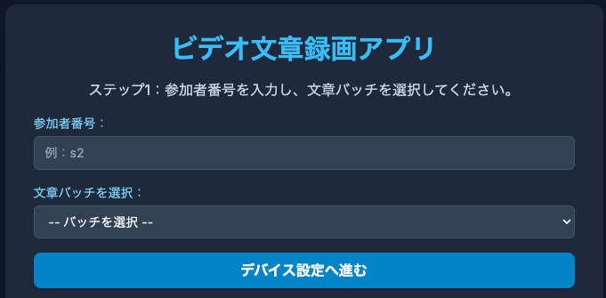
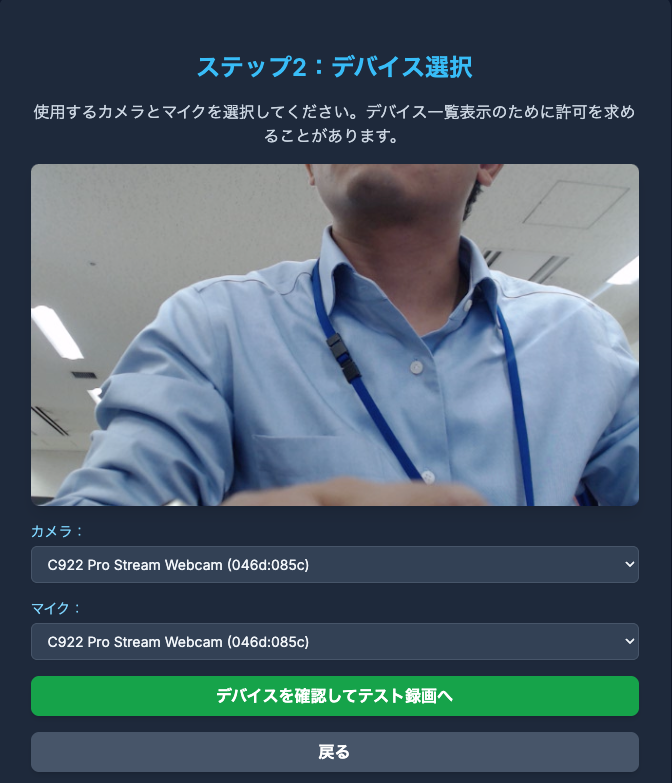
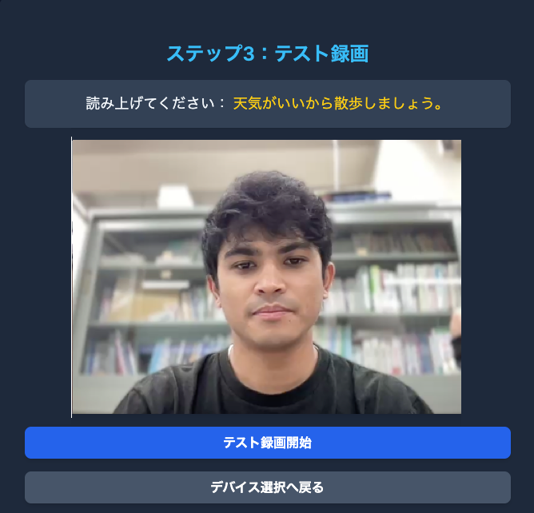
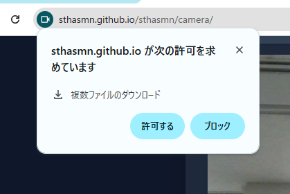

JGRIDコーパスプロジェクトへようこそ！
この度は、JGRIDコーパス構築プロジェクトにご関心をお寄せいただき、ありがとうございます。 このページでは、本プロジェクトの簡単な概要と、皆様にお願いしたい動画撮影の内容についてご説明します。
1. JGRIDコーパスとは？
JGRIDコーパスは、日本語の「リップリーディング（読唇術）」研究のための新しい映像・音声データベースです。 リップリーディングとは、騒がしい場所や声が聞こえにくい状況など、音声情報が不明瞭な場合に、話者の唇の動きから発話内容を読み取る技術のことです。
現在、英語圏では「GRID Corpus」のような大規模なデータセットが存在し、リップリーディング技術の研究開発が活発に進められています。しかし、日本語には同様の標準的なデータセットがまだ整備されていません。
そこで私たちは、日本語におけるリップリーディング技術の基盤を構築し、将来的には聴覚に障害を持つ方々のコミュニケーション支援や、様々な応用技術の開発に貢献することを目指して、このJGRIDコーパスを作成しています。 ご協力いただく映像・音声データは、この研究にとって非常に重要なものとなります。
2. どんな文章を読み上げるの？
皆様には、特定の構造で作られた短い日本語の文章を、一つずつ読み上げていただく様子を動画で撮影させていただきます。 文章の構造は、例えば以下の6つの要素で構成されます。
- 副詞 (例: 今すぐ, ゆっくり)
- 色 (例: 赤い, 青い)
- 物体 (例: ボール, 本)
- 場所 (例: ア, イ, ウ)
- 数詞 (例: 0, 1, 2)
- 動詞 (例: 置く, 取る) とそれに伴う助詞
実際の例文としては、「今すぐ 赤い ボールを ア １ に 置く。」のような文になります。 撮影時には、PCの画面に表示されるこれらの文章を読み上げていただきます。全部で1000文章あり、100文章ずつのバッチに分けて撮影を行います。
ご参考：英語のGRIDコーパスの収録動画例
どのような雰囲気の動画になるか、参考として英語のGRIDコーパスから同様の形式で収録された動画（音声あり）をご覧ください。 JGRIDでは、これと似た形で、日本語の文を読み上げていただきます。
（この参考動画は英語のGRID CORPUSの動画です。JGRIDでは同様の形式で日本語の文を読み上げます。）
downloaded from : https://spandh.dcs.shef.ac.uk/gridcorpus/
動画撮影の準備と手順
高品質なデータを収集するため、以下の点にご注意いただきながら撮影を進めてください。 撮影は、指定されたPC、カメラ、マイクを使用して行います。 発話する文章は全部で1000文あり、100文ずつのバッチ（計10バッチ）に分けて撮影します。
1. 撮影前の設定
各ステップのスクリーンショットも参考にしてください。（スクリーンショットはクリックで拡大表示できます - 準備中）
- 参加者番号の入力: 撮影アプリケーションの「名前」の欄に、ご自身の参加者番号を入力してください。例えば、参加者番号が「3」の場合は「s3」と入力します。
-
文章バッチの選択: 「文章バッチを選択してください」という項目で、今回撮影するバッチ（1から10まであります）を選択します。これらは順番に行っていただきます。

-
カメラとマイクの選択:
- 「カメラを選択してください」では、「C922 Pro Stream Webcam」（または類似の名称）を選択してください。
- 「マイクを選択してください」でも、同様に「C922 Pro Stream Webcam」（または類似の名称のついたマイク）を選択してください。

-
テスト記録とダウンロード許可:
- 設定後、「テスト記録を開始」ボタンを押して、短いテスト録画を行ってください。

- テスト録画が終わったら「終了」ボタンを押します。すると、録画された動画のダウンロードが自動的に開始されます。
-
重要： ブラウザから「ファイルのダウンロードを許可しますか？」といった趣旨の確認が表示された場合は、必ず「許可」をクリックしてください。一度許可すると、次回以降のダウンロードではこの確認は表示されません。許可しないと、撮影データが保存されません。

- 設定後、「テスト記録を開始」ボタンを押して、短いテスト録画を行ってください。
2. 撮影環境の準備
- 顔の位置調整: カメラにご自身の顔がはっきりと映るように位置を調整してください。顔全体、特に口元が明瞭に確認できるように、画面の中央に来るのが理想です。
- 静かな場所の選択: 周囲の雑音（話し声、物音、機械音など）ができるだけ入らない静かな場所で撮影を行ってください。マイクは小さな音も拾ってしまいます。
- 照明: 顔が明るくはっきりと見えるように、部屋の照明を調整してください。逆光になったり、顔に影ができたりしないように注意しましょう。
3. 発話時の注意点
- 明瞭な発話: 画面に表示される文章を、一語一語はっきりと、普段話すような自然な声の大きさで読み上げてください。早口になったり、声が小さすぎたりしないように意識しましょう。
- 発話のタイミングと長さ: 1つの文章を読み終えるのに、およそ2～3秒程度を目安にしてください。極端に長く間をあけたり、急いで読み終えたりしないようお願いします。
- 視線: 可能であれば、カメラのレンズの少し上あたりを見るように意識すると、より自然な映像になります。ただし、文章を読むために画面を見ることは問題ありません。
4. 本番撮影中の操作
- 録画開始のタイミング: 「次へ」ボタンまたは「やり直し」ボタンをクリックした時点で、その文章の録画が自動的に開始されます。ボタンを押したら、すぐに発話を開始して大丈夫です。
- 次の文へ: 1つの文章を読み終えたら、画面上の「次へ」ボタンをクリックするか、Enter キーを押してください。次の文章が表示され、録画が開始されます。
- 読み間違えた場合: もし文章を読み間違えたり、言い直したい場合は、画面上の「やり直し」ボタンをクリックしてください。現在の文章の録画をキャンセルし、同じ文章をもう一度録画することができます。
- 休憩: 撮影の途中で休憩を取りたい場合は、「休憩」ボタンをクリックしてください。
5. その他
- リラックスして: 緊張せず、普段通りリラックスして撮影に臨んでください。
- ご協力に感謝します: 皆様のご協力が、日本語リップリーディング研究の大きな力となります。どうぞよろしくお願いいたします。
6. 撮影終了後：ファイルのアップロード
- 1つのバッチ（100文章）の撮影が完了すると、録画された動画ファイル（通常は`.mp4`形式）と発話した文章ファイル（通常は`.txt`形式が、お使いのPCの「ダウンロード」フォルダに自動的に保存されます。
- 重要： 各バッチの撮影が完了するたびに、ダウンロードされた動画ファイルを指定のGoogle Driveフォルダにアップロードしてください。
- ファイル名は、参加者番号とバッチ番号が含まれたものになっているはずです（例: s3_batch1_1.mp4 と s3_batch1_1.mp4）。ファイル名を変更せずにそのままアップロードしてください。
- 全てのバッチ（10バッチ）の撮影とアップロードが完了したら、研究担当者にご連絡ください。